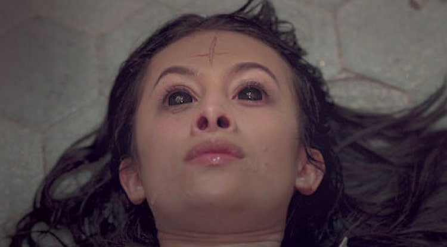
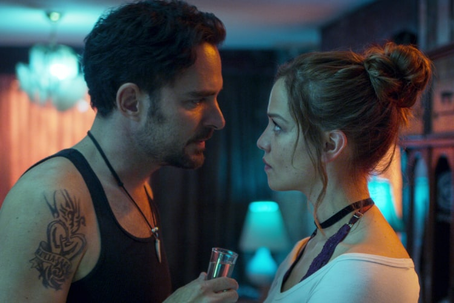

5. Haunted Latinoamérica
 Haunted Latinoamérica SinopsisUna mirada escalofriante a los relatos de primera mano de personas latinoamericanas que han sido testigos de horripilantes y extraordinarios sucesos sobrenaturales y otros fenómenos inexplicables. Estas experiencias 100% reales presentan sucesos aterradores, psicológicamente perturbadores y a menudo paranormales.
4. Los Irregulares
Los Irregulares SinopsisAmbientada en el Londres victoriano, la serie sigue a una pandilla de adolescentes callejeros con problemas que son manipulados para resolver crímenes para el siniestro Doctor Watson y su misterioso socio comercial, el esquivo Sherlock Holmes. A medida que los crímenes adquieren un tono sobrenatural horrible y surge un poder oscuro, los Irregulares deberán unirse para salvar no solo Londres sino el mundo entero.
3. Ginny y Georgia
Ginny y Georgia SinopsisLa angustiada y torpe Ginny Miller de quince años a menudo se siente más madura que su madre de treinta, la irresistible y dinámica Georgia Miller. Después de años huyendo, Georgia quiere desesperadamente echar raíces en la pintoresca Nueva Inglaterra y darle a su familia algo que nunca han tenido … una vida normal. Pero no todo es carpool y Kombucha, ya que el pasado de Georgia amenaza su nueva forma de vida y la de su familia … y Georgia hará cualquier cosa para proteger a su familia.
2. La Serpiente Netflix
La Serpiente Netflix SinopsisHaciéndose pasar por un comerciante de gemas, Charles Sobhraj y su novia Marie-Andrée Leclerc viajaron por Tailandia, Nepal e India, llevando a cabo una serie de crímenes en el ‘Hippie Trail’ asiático, convirtiéndose en los principales sospechosos de una serie de asesinatos de jóvenes viajeros occidentales. Herman Knippenberg, un diplomático de la embajada holandesa, entra sin saberlo en esta intrincada red de crímenes, él, con la ayuda de su esposa Angela, policía de todo el mundo. La Serpiente Netflix se posiciona en por prime vez en la lista Series de Netflix Más Vistas en Netflix.
1. ¿Quién Mató A Sara?
 ¿Quién Mató A Sara? SinopsisAlex, un hombre condenado por un delito que no cometió, es puesto en libertad tras 18 años tras las rejas. Al salir, solo quiere vengarse de Rodolfo Lazcano, el responsable de la muerte por la que fue condenado. Las cosas se complican cuando Alex inicia una relación sentimental con Elisa, la hija menor de Lazcano, y cuando descubre que Rodolfo es inocente y que alguien más, que hábilmente se ha mantenido en las sombras, fue la verdadera causa de su deshonra.
Informacion sacada de la pagina: netfliteando.com